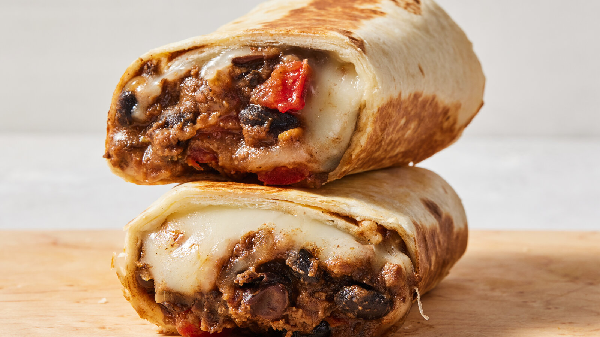

Burrito Recipe

Description:
A burrito is a delicious Mexican dish consisting of a flour tortilla wrapped around various fillings such as rice, beans, meat, cheese, and vegetables. It's a versatile and satisfying meal that can be customized to your taste.
Ingredients:
- 1 large flour tortilla
- 1/2 cup cooked rice
- 1/2 cup cooked beans (black or pinto)
- 1/4 cup shredded cheese
- 1/4 cup salsa
- 1/4 cup cooked chicken, beef, or tofu (optional)
- 1/4 cup chopped lettuce
- 1/4 cup diced tomatoes
- 1/4 cup sour cream or guacamole (optional)
Instructions:
- Warm the tortilla in a skillet or microwave for a few seconds until pliable.
- Spread the cooked rice evenly over the center of the tortilla.
- Add the cooked beans on top of the rice.
- Sprinkle the shredded cheese over the beans.
- Add the salsa and cooked chicken, beef, or tofu if using.
- Top with chopped lettuce and diced tomatoes.
- Add sour cream or guacamole if desired.
- Fold in the sides of the tortilla and roll it up tightly from the bottom to form a burrito.
- Serve immediately or wrap in foil for later enjoyment.
Back to Home